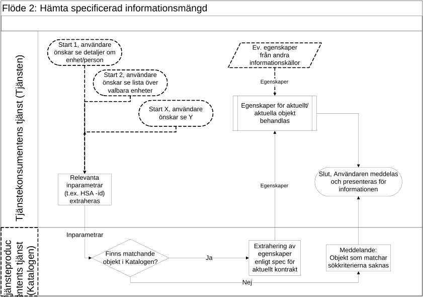

strategicresourcemanagement: organizational: organization
2.0.0-rc1 - RC
strategicresourcemanagement: organizational: organization - Local Development build (v2.0.0-rc1) built by the FHIR (HL7® FHIR® Standard) Build Tools. See the Directory of published versions
Källa: Tjänstekontraktsbeskrivning strategicresourcemanagement: organizational: organization, commit b349285d18c2 (2017-02-27, efter taggen 2.0_RC1), TKB_strategicresourcemanagement_organizational_organization.docx.
Utgången domän. Domänen kom aldrig längre än 2.0_RC1. I september 2017 flyttades tjänstekontrakten till infrastructure.directory.organization, som har en egen IG, och domänens repo är sedan dess tomt. IG:n dokumenterar den sista versionen med innehåll.
Kataloginformation om organisation och enheter/funktioner kan användas för många olika syften och behovet av information ser då också olika ut. Principen för informationshämtningen är dock densamma och kan beskrivas med samma flöde.
Ett stort och viktigt användningsområde för katalogtjänster inom vård och omsorg är vårdsökningar där en användare på en webbsida söker efter till exempel en sjukgymnastikmottagning i Oxelösund eller information om vart de ska vända sig med akut halsfluss när klockan är sju på en fredag kväll. Sökalgoritmerna skapas i detta fall av tjänstekonsumentens tjänst (webbsidan), men tjänsteproducentens tjänst bidrar med information om vilka vårdmottagningar som finns, vilken typ av verksamhet de bedriver samt öppettider och annan kontaktinformation.
Andra exempel på befintliga användningar är presentation av olika typer av förvalslistor i gränssnitt riktade mot vårdpersonal (t.ex. vilka vårdenheter som ingår i en vårdgivares verksamhet eller vilka mottagningar som tillhör en klinik) eller detaljerad kontaktinformation till en enhet, funktion eller person. Informationen skulle också kunna sägas stödja en behörighetshantering baserad personliga/anställningsrelaterade egenskaper, då tjänstekontrakten också levererar behörighetsgrundande information i form av t.ex. tillhörighet till legitimerad yrkesgrupp och befattning.
Samtliga dessa användningsområden kan beskrivas med nedanstående övergripande flöde.
Tjänstekontrakten som idag stödjer detta flöde är
GetHealthCareUnit (se avsnitt 6.1)
GetHealthCareUnitList (se avsnitt 6.2)
GetHealthCareUnitMembers (se avsnitt 6.3)
GetUnit (se avsnitt 6.4)
GetHealthCareUnitIncludingManager (se avsnitt 6.5)
Fler tjänstekontrakt kan komma att utvecklas varefter behov uppstår.
Flödet startar generellt när en användare i tjänstekonsumentens tjänst (nedan kallad Tjänsten) önskar åtkomst till viss information som finns i tjänsteproducentens tjänst (nedan kallad Katalogen)
Exempel på önskemål kan vara att se detaljerad information en enhet, funktion eller person eller att se en lista över valbara vårdenheter vid registrering i ett kvalitetsledningssystem
Tjänsteproducenten kan här antingen hämta den efterfrågande informationsmängden i det ögonblick då användaren försöker få åtkomst till informationen eller i förväg genom regelbunden (ofta dygnsvis) inhämtning av den totala informationsmängd som överenskommits i anslutningen
Relevanta inparametrar extraheras och skickas i överenskommet tjänstekontrakt till Katalogen
Vilka inparametrar som är relevanta definieras i respektive kontrakt
Katalogen verifierar om aktuellt objekt återfinns i Katalogen, baserat på inskickade inparametrar
Om så inte är fallet skickas ett meddelande till Tjänsten att objektet saknas och flödet fortsätter då enligt punkt 6.
Om objektet återfinns i Katalogen extraheras de egenskaper som specificerats i aktuellt tjänstekontrakt och skickas till Tjänsten
Egenskaper för det eller de objekt som returnerats från Katalogen behandlas i Tjänsten
Irrelevant information sållas bort, eventuell nödvändig översättning av attributinnehåll görs och informationen läggs in i Tjänstens layout/mallar för presentation av information
Vissa tjänster använder även information från andra källor, t.ex. Nationella Patientenkäten eller Mina vårdkontakter som då också läggs ihop med informationen från Katalogen enligt ovan
Tjänsten meddelar användaren resultatet av sökningen och presenterar den information som erhållits från Katalogen samt eventuella andra informationskällor
| Namn/beteckning | Beskrivning alt. referens |
|---|---|
| Användare | Kan utgöras av allmänheten (en person som gör en vårdsökning på en publik webbplats) eller av en medarbetare inom vården (som söker information om tillgängliga enheter eller kontaktinformation till en specifik enhet) |

| Tjänstekontrakt | Flöde |
|---|---|
| GetHealthCareUnit (se avsnitt 6.1) | Hämta specificerad informationsmängd |
| GetHealthCareUnitList (se avsnitt 6.2) | Hämta specificerad informationsmängd |
| GetHealthCareUnitMembers (se avsnitt 6.3) | Hämta specificerad informationsmängd |
| GetUnit (se avsnitt 6.4) | Hämta specificerad informationsmängd |
| GetHealthCareUnitIncludingManager (se avsnitt 6.5) | Hämta specificerad informationsmängd |
För närvarande är aggregering eller engagemangsindex ej aktuellt, då endast en tjänsteproducent är ansluten till tjänstedomänen.
I samband med att fler tjänsteproducenter ansluter till tjänstedomänen behöver sökningen från anropande tjänstekonsument realiseras mot flera tjänsteproducenter. Vilken alternativ lösning som ska tillämpas när denna situation uppstår är ännu inte beslutat, se AB-2.3 [R1].